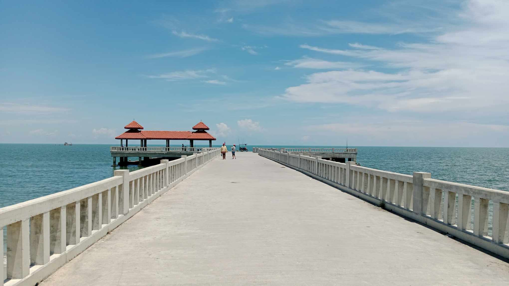
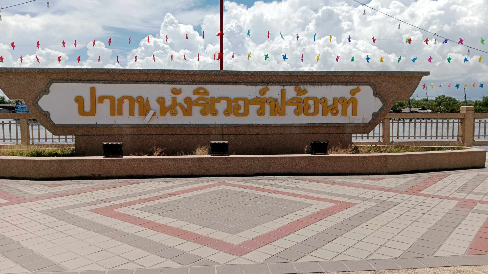

จุดชมวิว
1.จุดชมวิวแหลมลุมพุก
รูปภาพจาก : FACEBOOK
.....จุดชมวิวแหลมตะลุมพุก ตั้งอยู่ที่สุดปลายแหลมตะลุมพุก สามารถมองเห็นวิวรอบ ๆ แหลมตะลุมพุกได้แบบ 360 องศาได้แบบเต็มตา
GOOGLE MAP : https://maps.app.goo.gl/abQbvWYQgzFAak9s6
2.สพานตัวที

.....สะพานตัวที หัวถนนทะเลปากพนัง จากอดีตถึงปัจจุบัน สภาพเปลี่ยนไปเนื่องจากคลื่นลมเมื่อปลายปี 57 กับต้นปี 59 แต่ในปัจจุบันได้มีการซ่อมแซมเรียบร้อยแล้ว
GOOGLE MAP : https://maps.app.goo.gl/aZweNkZ8nvq6x9Qd9
3.ปากพนังริเวอร์ฟร้อนท์

.....ปากพนังริเวอร์ฟร้อนท์ ปัจจุบันมีการพัฒนาให้เป็นสถานที่พักผ่อนหย่อนใจของชาวปากพนัง สถานที่สวยน่ะเป็นแนวยาวไปกลับ2km. ในยามเช้าและยามเย็นอากาศดีมาก วิวสวยทีเดียวด้านหนึ่งเป็นแม่น้ำปากพนัง คุณจะเห็นวิถีชุมชน เห็นคุ้งน้ำ เห็นเครื่องมือดักปลา มองเรือแล่นผ่านไปมา
GOOGLE MAP : https://maps.app.goo.gl/7MFJJRgb7Zmn6USg6